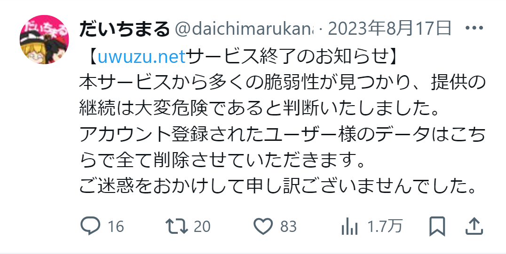
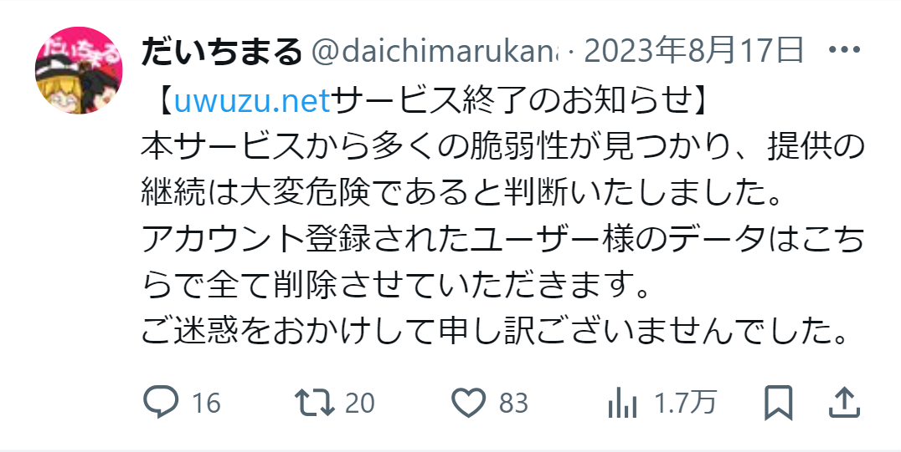

☆ 爆 誕 ☆
uwuzuが世に放たれました！
Anniversary
1年間、見守っててくれてありがとう！
2024年8月16日、uwuzuはリリースより1周年を迎えました！
公開から1日でサービス終了、もう二度とあんな姿はお見せしません。
ここまで開発を続けることができたのも、uwuzuを利用してくださる、そして見守ってくださったみなさんのおかげです。
uwuzuは、立派なSNSになれるよう、今後もどんどん成長するでしょう。
そんなuwuzuを、見守って、探って、使ってほしい、
今後もuwuzuをよろしくお願いいたします。
uwuzuを数字で見てみませんか？
小さいですが、この一年間をご覧あれ！
ユーザー数
投稿数
サーバー数
uwuzuがこの1年間どのように成長してきたのかをここからご覧いただけます！
uwuzuが世に放たれました！
 

HTMLのエスケープができておらず致命的な脆弱性に...
一日で唯一のサーバーは終了しました
招待によるアカウント登録に制限し、uwuzuの開発用サーバーが構築されました
こっからuwuzuの開発はかなり活発に...！
NSFW、
そう、センシティブな画像を投稿する際にボタンを押さないと見られないように！
センシティブなコンテンツを投稿したい人も、見たくない人も、快適に使用できるようになりました
しれっとActivityPubに部分対応...
完全対応はまだまだ先になりそうです...
ぽち(poti_nico)さんが「かんきつさーばー」というuwuzuサーバーを公開！
徐々にuwuzuが復活しつつあります...
uwuzu公式サイトのuwuzu.comがぷとん(putonfps)さんによって制作され公開、uwuzuというプロジェクトがより広く知られるようになりました！
uwuzu v1.3.0がリリース、投稿の装飾や残り文字数表示、ブックマーク機能など様々な機能が追加されました！
次のアップデート、uwuzu v1.4.0で予定されている新機能を紹介します！
すでにあるユーズを拡散する機能！
引用リユーズも実装予定です！
ユーズを拡散してコミュニティ内の多くの人にユーズをみてもらうことが可能になります！
あなたのユーズや好みに合わせてuwuzuがタイムラインに表示されるユーズを厳選！
きっとあなた好みのユーズが見つかるでしょう！
また、この機能により「バズり」という概念も生まれるかもしれません！
完全にサーバー管理者様向けの機能ですがuwuzuのアップデートが簡単になります！
これまでは手動でミスをしてしまうとサーバーがダウンしてしまうなどの課題がありましたがこのアップデートでスムーズに新機能やバクの修正が可能になります！
どんなサーバーでも常に最新の機能が使えるという点では重要なアップデートです！
この他にも様々な新機能や変更点があるのでお楽しみに！
些細なところから使いやすくて楽しいSNSを作ります！
ん？uwuzuに興味をもってくれた...？
もしuwuzuを始めたいなら以下のリンクから始められます！
独自のサーバーを立ててネットに公開したり、招待機能を有効にして友達と楽しんでもよし、すでにあるサーバーに参加してみんなとワイワイやってもよし！
あなた好みの使い方でぜひどうぞ！
uwuzuをはじめる！ → uwuzuのサーバーを一覧にしたページに移動します！
サーバーを立ててみる！ → uwuzuサーバーの構築方法ページに移動します！
コミュニティを覗いてみる！ → uwuzuの公式Discordコミュニティを開きます！
(↑uwuzuを使ったことがない方も大丈夫！入ってもらえるだけで開発者が泣いて喜びます↑)